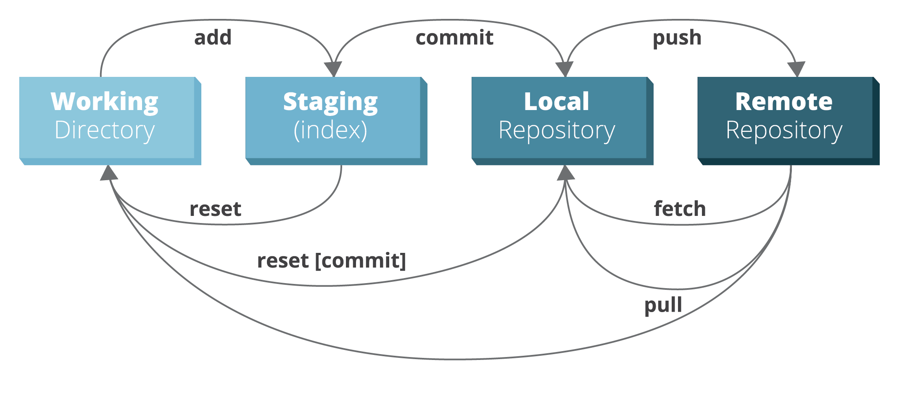

Chapter 5 Version control
5.1 Objectives
- Understand different ways to deal with versions of data
- Understand the workflow for Git
- Know about when branches might be helpful
5.2 Introduction
I would imagine that most people here will have found themselves in this situation before:

I certainly have! And over the years I’ve tried different ways of organising revisions. For documents it works quite well to start your document title with a date, for example 2020-04-05_Project_analysis.docx so that a new version would have a more recent data, such as 2020-05-08_Project_analysis.docx. That way your revisions are organised in chronological order.
If you are working with multiple people on the same document you can add initials to the end, e.g. 2020-04-05_Project_analysis_JD.docx, so you know who has reviewed/commented on the document. You can then merge documents within MS Word, if you’re using that.
More recently, I’ve become a fan of Google Docs, which provides much of the functionality of MS Office, but allows you to work remotely on a document with other people. Changes are registered in its History and you can go back through time.
All this works reasonably well for documents, but this is less suitable for code, where changes are made often and have clear consequences on the workings of the code further down. This gets us to the topic of version control systems, of which Git is one.
Git allows you to keep track of changes to your code and share those changes with others. It works particularly well when used in conjunction with GitHub, a website that enables sharing your code with others.
In general, there are two different types of version control systems: centralised and distributed. Both types of version control systems their changes in a database, called a repository. All work is done on a personal copy, called a working copy. We’ll briefly go through the differences between how these two systems function in this context.
5.3 Centralised version control systems
The centralised version control system has just one centralised repository. Each user has its own working copy to which changes are made. These changes are then communicated with the central server that holds the (centralised) repository. You commit your changes to the server, other users update and can directly see your changes.

Image by Michael Ernst.
5.4 Distributed version control systems
The distributed version control system works a little different, where each user not only has their own working copy, but also their own repository. You commit your changes to your repository but other people cannot see those changes yet. For that to happen you need to push your changes to the central repository. You do not get other people’s changes, unless you specifically pull those changes into your own repository.

Image by Michael Ernst.
Here we will be using Git, which is a distributed version control system. Version control with Git works differently to all other version control systems in the way that it views the data. Whereas other version control systems store information as changes to a base version of a file (thus tracking how a file changes over time), Git stores data as a snapshot of the project over time. If a file has changed then Git stores the file again and if a file is unchanged then it links to the original, unchanged file.
As such, Git can be thought of as a mini file system.
5.5 Git workflow
Although Git can work entirely local, it is usually used in conjunction with a remote storage - in our case GitHub.
You have a working directory on your computer that contains all the files that you are working on. There is also a local repository inside your working directory that contains an object database with all the versions of the files, changes, commits etc. associated with your files. Lastly, there usually is a remote repository that contains a copy of your local files and local repository. In our case, this remote repository is on GitHub.
GitHub needs to know which files to track, which are added to the index. These files are staged for a commit, which creates a snapshot of your files in time. The commit is always accompanied by a message that explains what the changes are that are being committed.
When you are happy with the commit you’ve made on your (local) computer, then you can push these changes to your remote repository on GitHub and it will be updated.

The image was adapted from the RebelLabs Git Cheat Sheet.
{kind=link}
5.6 Branches
If you are working on something by yourself then you’re able to judge whether or not you want to push any changes to your remote repository. Things get a bit more complicated when you are working in a team, because multiple people could work on the same file and the changes you push could affect others. The way GitHub deals with this is through the use of branches.
Simply put, a branch is a copy of your repository where you can safely make changes/experiment without worrying how these changes might affect others.
There can be many different branches in your repository, but only one can be deployed: the master branch. So if you are making changes and push them to the master branch then they are immediately implemented.
We will learn how to create branches later.
Below is a schematic overview of the process you go through on GitHub.

Image adapted from the GitHub guide.
5.7 Files under version control
When you are using version control, you probably do not want to put every file and folder in your working directory under version control. After all, your working (or project) folder will likely contain binary files, such as text documents or presentations, and data that you want to keep separate.
Data can take up lots of space and GitHub is not the place to store these files - it really is intended for code. Data associated with publications is usually shared via dedicated data repositories, such as Apollo - University of Cambridge Repository.
But only putting part of the files under version control means that we need to tell git which files to keep track of, or not. It does so with a gitignore file, where we tell git which files to ignore.
In a little while we’ll be creating our own repository on GitHub and there you have the option to add a .gitignore file from the start. However, I tend to forego on that, and let RStudio create one once I link a repository to RStudio (more on that later). You can add files and folders to a .gitignore file, and it might look something like this:
.Rproj
.RData
data
documents5.8 Glossary
The variety of phrases used in both types of version control systems can be a little overwhelming at times. Below is a non-exhaustive list of phrases you might come across. The glossary is an adapted version from here.
- branch a version of the repository that diverges from the main working project. Used to explore/test new features or make changes.
- clone a copy of a repository.
- commit stores the contents of the index (the staging area of Git) in a new commit. Needs to be provided with a commit message that explains what the changes are.
- fetch downloading and copying the files of a particular branch to your computer.
- fork creates a personal copy of somebody else’s repository.
- index working or staging area of Git. This is where files that have been changed/added/deleted are kept until you are ready to commit the files.
- master the primary branch of all repositories.
- merge takes the changes from one branch and adds them to another (usually the
masterbranch). These commits are normally first requested via a pull request. - origin is the conventional name for the primary version of a repository. Git uses
originas a system alias for pushing and fetching data to and from the primary branch. - pull or pull request a term used in GitHub to let people know you’ve pushed changes into a branch of the repository. These changes can then be reviewed by the repository maintainer and can be merged.
- push updates a remote branch with the commits made to the current branch. You are pushing your changes onto the remote.
- remote a copy of the original branch. When you clone a branch, that new branch is a remote, or clone.
- repository In many ways, you can think of a Git repository as a directory that stores all the files, folders, and content needed for your project. What it actually is, is the object database of the project, storing everything from the files themselves, to the versions of those files, commits, deletions, et cetera. Repositories are not limited by user, and can be shared and copied.
- upstream While there is not necessarily a default “upstream” or “downstream” for Git projects, upstream can be considered where you push your Git changes — this is often the master branch of the project within the origin
5.9 Key points
- Version control can be centralised on a server, or distributed with a local copy of a repository
- The git model is distributed, with a local repository that can be linked to an online remote repository
- GitHub is an online platform for remote repositories, allowing easy sharing of and collaborations on repositories